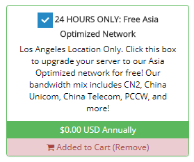
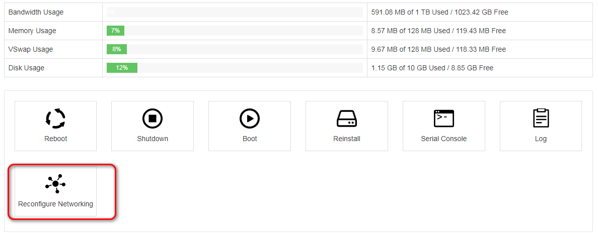

hostus
选择最低配置，$5.95 /quarter，也就是35RMB4个月，支持支付宝支付
之前一直在用这个，前几天刚到期
Atlanta地区的访问比较稳定，ss速度稳定在200kb左右，日常查阅资料是足够的
hostmybytes
有$0.42 USD Monthly的套餐，不过要年付，差不多一年要30RMB，支持支付宝支付
如果嫌128MB的不够用，可以购买亚洲优化的洛杉矶服务器特价,1G的仅需$7每年，数量有限！
注意购买的时候要勾选亚洲优化套餐

注意QQ邮箱不能注册该网站
注意如果购买好之后通过ssh无法连接，先不要直接认定被墙了(这个看运气),可以到控制面板(邮件有提供地址)去重新配置下网络

最快速的ss搭建
提供一个最快速的ss搭建方式，不使用一键脚本
注意python版本要2.7以上才可以，使用python -V可以查看版本，所以系统直接选择centos7比较省事
//yum groupinstall -y "Development Tools"
yum -y install epel-release
//yum update
yum -y install python-pip
pip install --upgrade pip
pip install shadowsocks
编写配置文件
{
"server":"my_server_ip",
"server_port":8388,
"local_address": "127.0.0.1",
"local_port":1080,
"password":"mypassword",
"timeout":300,
"method":"aes-256-cfb",
"fast_open": true
}
启动服务
# 前台运行
ssserver -c shadowsocks.json
# 后台运行
ssserver -c shadowsocks.json -d start
ssserver -c shadowsocks.json -d stop